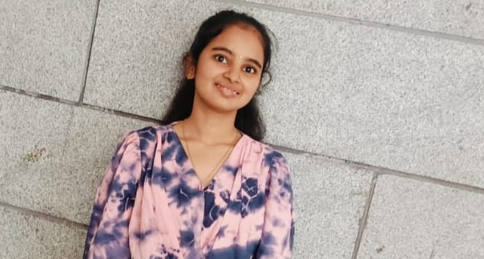

Email: thotalakshmi2244@gmail.com | phone: +91 9182361572
Location: Macherla, Andhrapradesh
To secure a challenging position in a reputed MNC and build a long-term Career in the software industry by using my skills and learning to grow both personally and professionally.
Programing languages:
Eclampsia is seizures that occur in pregant people with preeclampsia symptoms of eclamsia are high blood pressure,headaches,blurry vision,difficult to breathing,swelling of hands,face or ankles and convolutions.
Eclampsia is a rare but serious condition that occurs in the second half of pregancy.
To prevent these we are using wearable devices it helps to detect seizures in pregency women.the devices include smartwatches,EEG recorders,and other sensors
p>